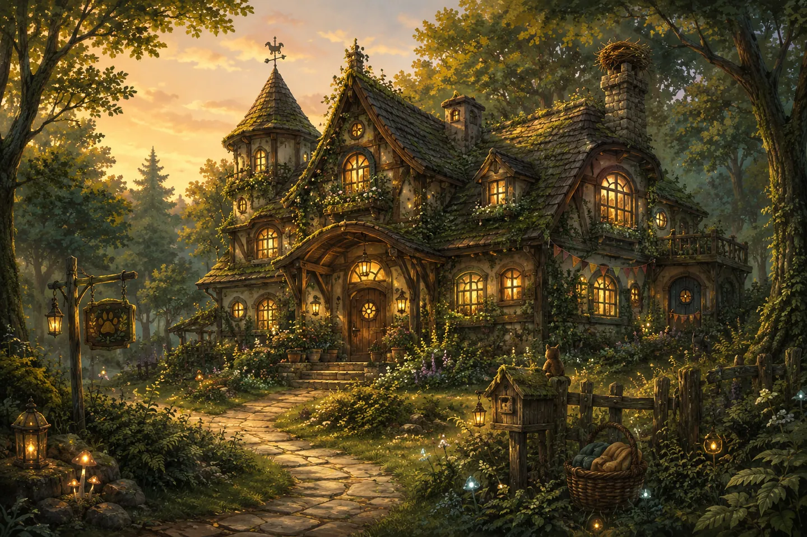
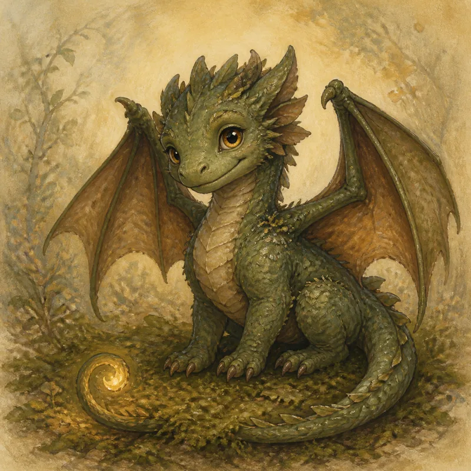
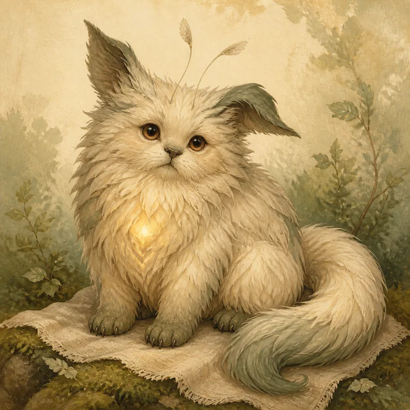
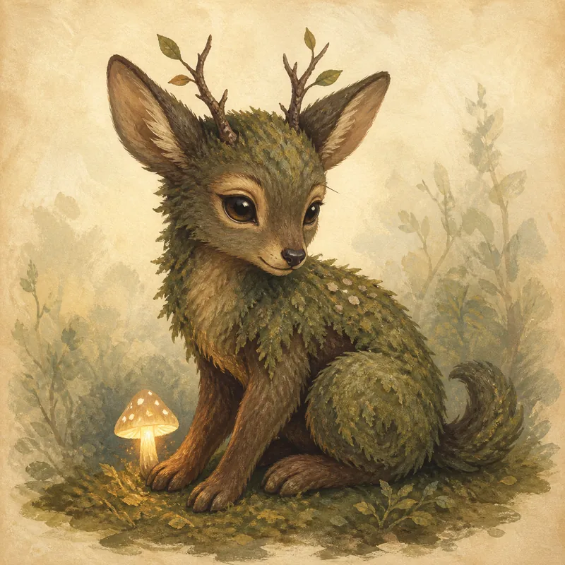

„Wir wollten eigentlich nur einmal schauen – und dann saß Fips plötzlich auf unserer Fensterbank und hat uns angesehen, als würde er schon immer hierher gehören.“

Ein Zuhause für jedes Wunder.
Entdecke magische Wesen, die auf einen Menschen warten, mit dem sie ihr nächstes Abenteuer beginnen können.
Weiter unten findest du unsere Services und Erfahrungsberichte. Schau dich um – vielleicht findet dein Herz ja zu einem unserer magischen Wesen.
Was unsere Familien erzählen
Jede Kreatur bringt ihre eigene Geschichte mit. Hier erzählen einige ihrer neuen Menschen, wie es war, als die Magie bei ihnen einzog.
„Morgens liegt Luna am liebsten in der Sonne, abends verschwindet sie irgendwo zwischen den Bücherregalen. Wir haben aufgehört zu fragen, wo sie die ganze Zeit gewesen ist.“
„Das Schönste war nicht, unsere kleine Kreatur zu finden. Es war das Gefühl, dass sie uns gefunden hat.“



Wer wartet schon auf dich?
In den Ecken unserer Welt verstecken sich die unterschiedlichsten kleinen Wesen – neugierig, eigenwillig, verschmust oder ein bisschen magisch und geheimnisvoll. Was sie verbindet? Jede von ihnen sucht einen Ort, an dem sie ganz sie selbst sein darf.
Jede Kreatur bringt ihre eigene Geschichte mit. Und vielleicht beginnt die nächste genau bei dir.
Kreaturen kennenlernen →Wie möchtest du helfen?
Jede Kreatur verdient ein Zuhause. Du entscheidest, wie du Teil ihrer Geschichte wirst.
Pflegen
Manchmal braucht ein kleines Wesen nur etwas Zeit. Schenke ihm vorübergehend Schutz, Fürsorge und ein Zuhause.
PflegenAdoptieren
Schenke einer magischen Kreatur ein liebevolles Zuhause und beginnt gemeinsam euer nächstes Abenteuer.
KreaturenUnterstützen
Auch ein kleiner Zauber kann Großes bewirken. Hilf uns dabei, magische Wesen zu versorgen und ihnen ein neues Zuhause zu schenken.
Unterstützen